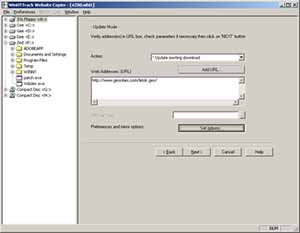

Version 3.49-2 (05/20/2017)
Engine fixes (keep-alive, redirects, new hashtables, unit tests)
Installing HTTrack:
Go to the download section now!
For help and questions:
Visit the forum,
Read the documentation,
Read the FAQs,
Browse the sources

Welcome
HTTrack is a free (GPL, libre/free software) and easy-to-use offline browser utility.
It allows you to download a World
Wide Web site from the Internet to a local directory, building recursively all directories, getting HTML,
images, and other files from the server to your computer. HTTrack arranges the original site's relative
link-structure. Simply open a page of the "mirrored" website in your browser, and you can browse the site
from link to link, as if you were viewing it online. HTTrack can also update an existing mirrored site,
and resume interrupted downloads. HTTrack is fully configurable, and has an integrated help system.
WinHTTrack is the Windows (from Windows 2000 to Windows 10 and above) release of HTTrack, and WebHTTrack the Linux/Unix/BSD release. See the download page.
@
|